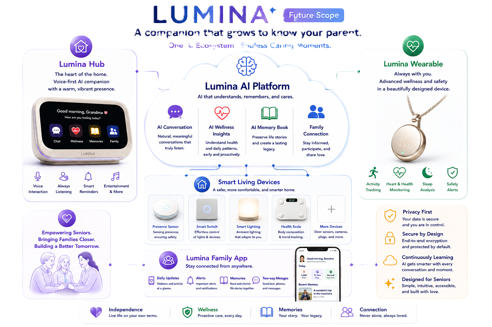

Lumina Companion
Building the future of aging in place
Lumina Companion is an independent venture reimagining how seniors stay connected, safe, and understood at home.
Lumina comes from “light” — because even a small light can make home feel less lonely.
The problem
Aging in place is where most seniors want to be — but it often comes with isolation for them and quiet, constant worry for their families. Existing solutions are either impersonal medical alert devices or generic smart-home gadgets that weren’t designed with seniors in mind.
Our solution
Lumina combines a voice-first home companion, a lightweight wellness wearable, and a family app into one connected system — built specifically for how seniors and their families actually live.
Why now
Conversational AI has finally reached the point where natural, low-friction interaction is possible for users who don’t want to learn new technology. Wearables are cheap and reliable. Aging populations are growing fast across Canada. The pieces are ready — Lumina brings them together.
Our Vision: The Complete Lumina Ecosystem
Today, the core of Lumina — Hub, Wearable, and Family App — is real, working, and in the hands of pilot families in Ottawa. Our long-term vision extends this into a fully connected, privacy-first smart home for aging in place.

Development milestones
- Done Hub voice interaction (English / French / Chinese)
- Done Wearable integration — heart rate, SpO2, steps, sleep
- Done Video Call — senior to caregiver
- Done Family App
- In progress Data security hardening — completing before pilot family onboarding
- Soon Local smart-home integration (presence, lighting, connected scale ecosystem)
Traction
- Actively piloting with real families in Ottawa, Canada
- 24 people on our early-access waitlist
- Full hardware and software stack built and running end-to-end
Why I Built Lumina
Like many adult children in their fifties, I live far from my mother. She often wanted someone to talk to, but I couldn’t always be there. What began as a simple conversation companion gradually became something much bigger. By understanding our conversations, Lumina could recognize changes in mood, help preserve her life stories, and — with a wearable — give me peace of mind that she was doing well.
After 25 years building software, hardware, and communication products, I realized I had the experience to make this real. Then I discovered something unexpected: in a few years, I’ll probably need Lumina myself. I’m not just building a product for today’s seniors — I’m building the companion I hope to have one day.
— Jason, Founder
Let’s talk
Interested in Lumina — as an investor, partner, or otherwise? Send a note and I’ll get back to you personally.
I typically respond within 1–2 business days.
Thank you — I’ll get back to you personally within 1–2 business days.